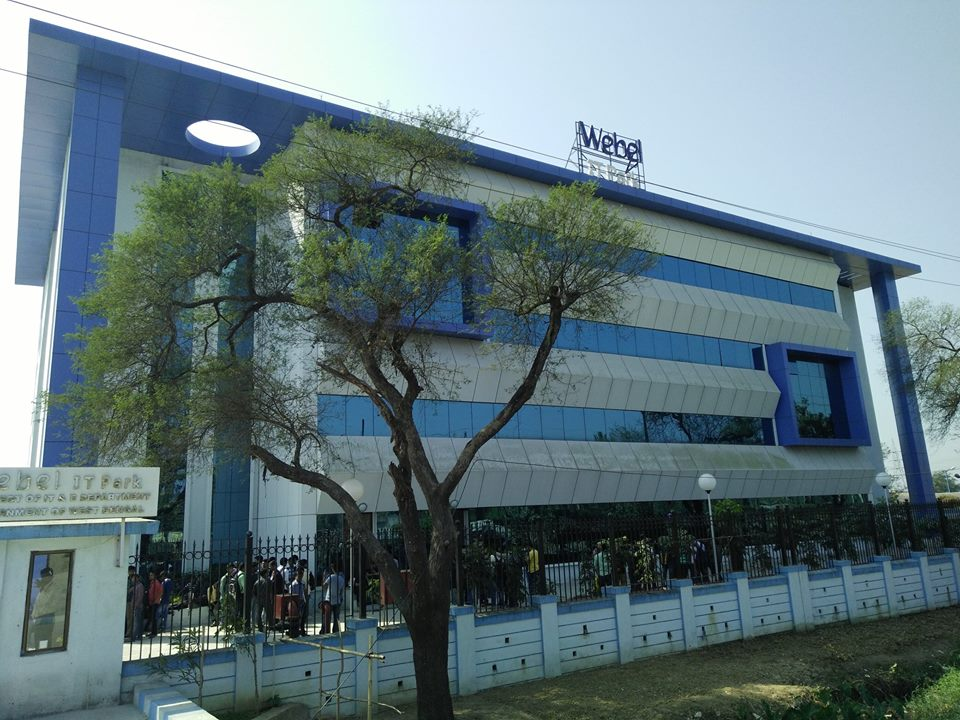

The Indian Institute of Information Technology Kalyani has been setup with an objective to produce best-in-class human resources in IT and to harness the multidimensional facets of IT in various domains. IIIT Kalyani strives to evolve into a world-class academic institution with the highest quality of education and research facilities and produce industry ready IT graduates to meet the industry demands. The institute will act as a catalyst in fostering an innovative entrepreneur-focused ecosystem to ensure that new products, solutions and IP are created in the State taking advantage of the intellectual capital of the State.
IIIT Kalyani has been set up at Kalyani, West Bengal by Government of India (MHRD), Government of West Bengal and
industry partners on a Not-for-profit Public Private Partnership (N-PPP) basis, being funded in the ratio of
50:35:15 respectively by the above three parties. Additionally, the Government of West Bengal has lent support
to the institute by granting 50 acres of land for setting up the Campus. The industry partners of IIIT Kalyani
are Coal India Ltd. and Rolta Foundation for the present.
The institute is run by the Board of Governors of IIIT Kalyani whose members include the representatives
of Government of India (MHRD), Government of West Bengal, industry partners and eminent people from academia,
industry and civil society.
Presently, the institute is being mentored by Indian Institute of Technology Kharagpur with Prof. Partha P. Chakrabarti, Director, IIT Kharagpur as Mentor Director and Prof. Anupam Basu, Professor, Department of Computer Science and Engineering, IIT Kharagpur as Executive Director/Professor-In-Charge.
IIIT Kalyani has been attributed the status of Institute of National Importance (INI) by the cabinet in March 2017.
While construction has been started in the land provided, the institute is presently running from the temporary campus at Webel IT Park, Kalyani.
